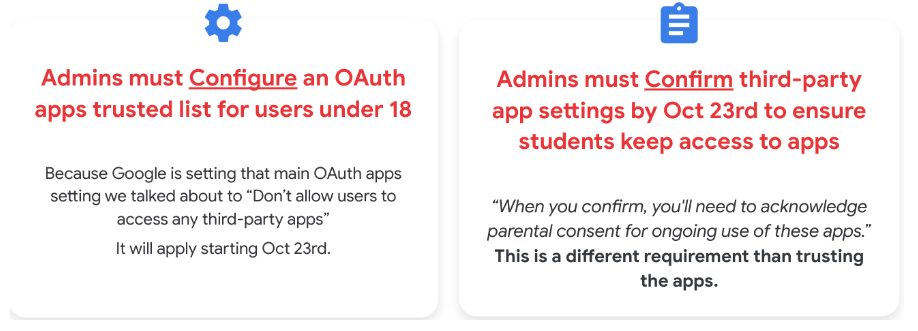

API Controls
All together now
This page includes the includes
Summary
Hey there, Google Admins! We’re on the cusp of significant shifts in Google’s API control settings for users under 18, set to shake things up this coming October. This is a noteworthy moment, especially for schools that haven’t yet fine-tuned their API Control settings. And for those who think they’re one step ahead, hold on! A slew of fresh updates and changes have already landed in the admin console, causing ripples of impact.
With the flurry of updates to the API Controls section in the admin console over the past couple of years, it’s time to take a breather and review the API controls, nail down best practices, identify necessary actions, and map out the route to get there.
TL;DR
Google is pushing us towards a Trusted List approach for OAuth Apps, which will be implemented in October. Google Admins need to set up the trusted list and confirm settings before then.

Understanding the Updates
Google notified primary admins on June 19th, 2023, announcing new API Controls, changes in behavior for users under 18 regarding their access to third-party apps, and a requirement to review and confirm access settings to third-party apps by Oct. 23rd, 2023.
Immediate Impact
Previously accessed apps should not be affected until October 23rd. Google has “configured” previously accessed apps from under 18 as limited.
This is why you are seeing a lot more “configured apps”
Any “new” app can not be accessed by under 18 and the user can “Request” the app.
This is why you’re seeing requests (from students)

“It’s like Google did the “Stop the bleed” approach for students for you.”
- Melissa Benson
API Controls
Overview
When users sign in to third-party apps using the “Sign in with Google” option (single sign-on), you can control how those third-party apps access your organization’s Google data.
API Controls Section:
Security > Access and data controls > API Controls
Manage Third Party Apps:
Security > Access and data controls > API Controls > Manage Third-Party Apps
Best Practices
Students: (Default) Don’t allow users to access any third-party apps
Staff: This needs to be discussed by the school. Be consistent with your other app policies. It’s best to lean towards a more controlled app approval process.
Required Actions
The process boils down to two actions: Configure and Confirm.

Configure
Configure a trusted list of OAuth apps: This is a significant task as most schools see hundreds and thousands of accessed apps.
- Go through the configured apps (marked as “limited”) and trust or block them. (remember, Google “configured” previously accessed apps for under 18 as limited)
- Figure out how to handle the incoming app requests.
- Look at all of the rest of the accessed apps and create our trusted list for the rest of our users. (this would be addressing the trusted list for over 18)
Ways to “approve” apps
- You can trust one by one, or a couple by couple by going into your configured or accessed app list from within the admin console. [image below]
- You could “add an app” and trust.
- Recommended: You can download the accessed apps list, bulk change access in a sheet, then bulk upload. [image below]

Watch the September Deep Dive for tips
Confirm
Confirm setting before October 23rd
- This is the Guided Stepper
- Think of this as you signing off with “parental/guardian consent”
- YouTube video of this process.
FAQ
- Is there a maximum of configured apps?
- Yes, 15,000. We are in talks with Google about this
- Can I unconfigure an app?
- It does not appear like you can truly “unconfigure” an app. We are talking to Google about this.
- I’m having issues with the iPhone native mail and calendar apps when I’m blocking APIs
- This is the full App ID for iOS in my console: 450232826690-0rm6bs9d2fps9tifvk2oodh3tasd7vl7.apps.googleusercontent.com.
- Can we disable the ability for students to “Request apps”?
- No. But it is something we will talk about internally to see if there is a work around.
- We asked Google and it’s “in the works”.
- Can staff request apps like students?
- No. Only under 18 can request. We are asking Google. Most likely a temp thing. (hopefully)
- Where does that “request” go (when students request access to an app)?
- Admin Console Dashboard > App access control card
- Security > API Controls > App Access Control > Manage Third-Party App Access. Then it’s the middle box across the top that says “Apps pending review”.
- Can we see “who” requested the app? Can we get alerted?
- Under Reporting > Audit and investigation > OAuth log events. Then add the condition “Event is Request”.
- Yes, by creating a Custom Rule: With the previous navigation then click on “Create activity rule” or “Reporting Rule” (depending on your edition). It will walk you through creating a rule (alert) where you can have it get sent to the Alert Center and email people.
- Can you explain the API Block-Exempt option when trusting an app?
- This is for people with Standard or Plus and use Context Aware Access.
- Selected apps maintain API access to Google Workspace services even when those services have Context-Aware Access policies that apply to API access. Resources: When adding an app, Assign Context-Aware access levels to apps, Use Cases. image
- Q & As from the after party
- Slide 1, Slide 2, Slide 3
Resources
Public Resources
- CDW Amplified Help Article: Manage access to unconfigured third-party apps
- Google Support Page: Manage access to unconfigured third-party apps for users designated as under 18
- Google Support Page: Control which third-party & internal apps access Google Workspace data
- Official Google YouTube Video: Google Workspace for Education Admin Console: How to review third party app access requests
Collaborative Member Resources
September 14th Deep Dive
- Collaborative Deep Dive - Back to School: Unpacking the Upcoming API Control Changes
- Slide Deck | Timestamps & Summary | Recording
- Q & A from the live stream